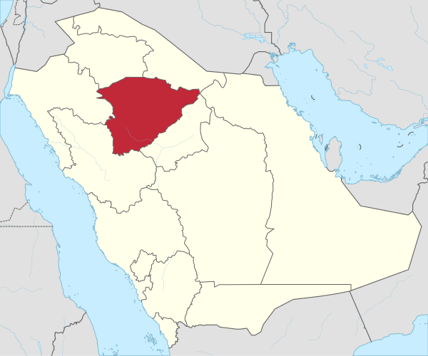

حائل مدينة سعودية في شمال نجد من المناطق الوسطى، وهي مقر إمارة منطقة حائل. وهي العاصمة الإدارية والإقليمية للمنطقة. وتشتهر حائل بالجبلين الشهيرين جبل سلمى وجبل اجا. تقع مدينة حائل في منطقة جبل اجا غربي وادي الاديرع وفي قلبها تقع بئر سماح المشهورة بغزارة وعذوبة مياهها، وتمتد المدينة على شكل قوس حول جبل السمراء كما يحدها شرقاً شعيب المليح المعروف باسم المليحيه ويحدها من الشمال والغرب جبل أجا. وقد كانت حائل في القرن التاسع عشر وأوائل القرن العشرين مركزاً لإمارة الجبل التي حكمها آل علي ومن بعدهم أسرة آل رشيد، وامتد نفوذها وقت قوتها إلى معظم أرجاء نجد وبعض المناطق المجاورة حتى أسقطها عبدالعزيز آل سعود في عام 1921م
الصفحة الرئيسية